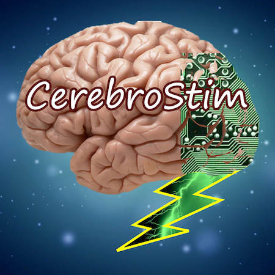
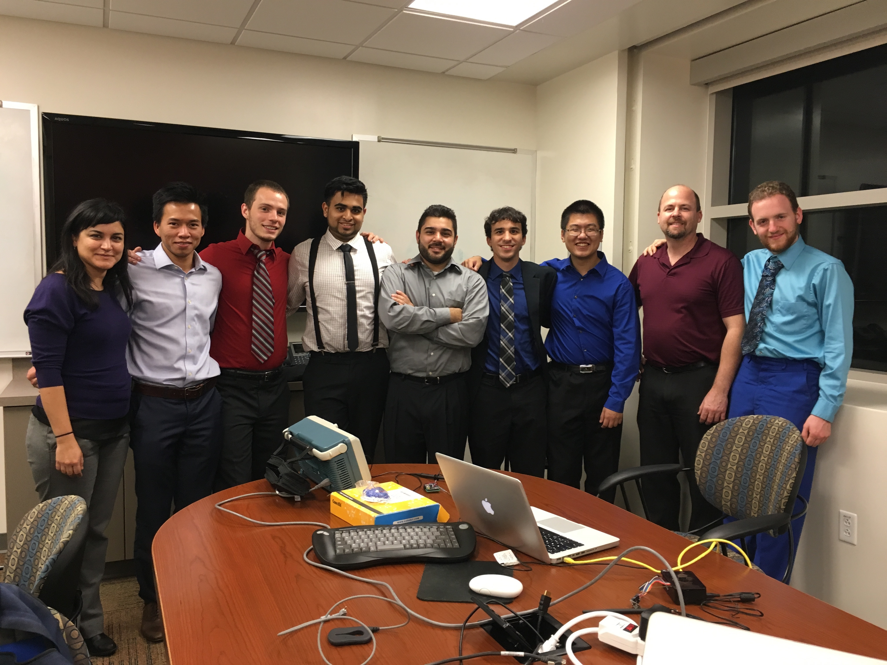

Address
St. Petersburg, FL 33716
Phone
School
Degree
Computer and Information Science and Engineering
GPA
Kenan Tarik Tufekci
Leadership At Work
My role as project manager for Enterprise Architecture gave great exposure to leading many people from all levels of the IT organization. Not only was I working with many directors for infrastructure, I had many technical and non-technical team members from many different educational backgrounds, ethinicities, gender, position, and age. I was successful at working with many different divisions within IT and got them to align together to accomplish different initiatives. My accomplishment along with everyone I worked with was noted in the jabil IT news letter Article Link

Leadership In College
The Integrated Product and Process Design (IPPD) program is an innovative educational initiative at the College of Engineering, University of Florida. I will work in a small multidisciplinary teams under the guidance of faculty coaches and industrial liaison engineers to design and build authentic industrial products for sponsoring companies. During my time through this program I acted at project manager and was given the opportunity to lead a team of engineering student for a year long project for Metronic. For more details please Click Here
 I was instrumental in organizing and serving as President of The Undergraduate Research Society. President of The Florida Engineering Society, President of The Tutoring Club, and Treasurer for Gator Robotics. The experiences I gained during my terms of office helped me build a strong foundation in leadership. I created and implemented policies and procedures, in collaboration with my team, faculty and administration. My excellent interpersonal skills enabled me to manage many group projects in a productive and amicably manner. I always portray a supportive attitude towards fellow students promoting mutual cooperation and teamwork.